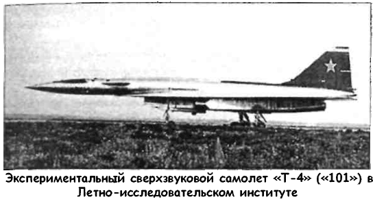
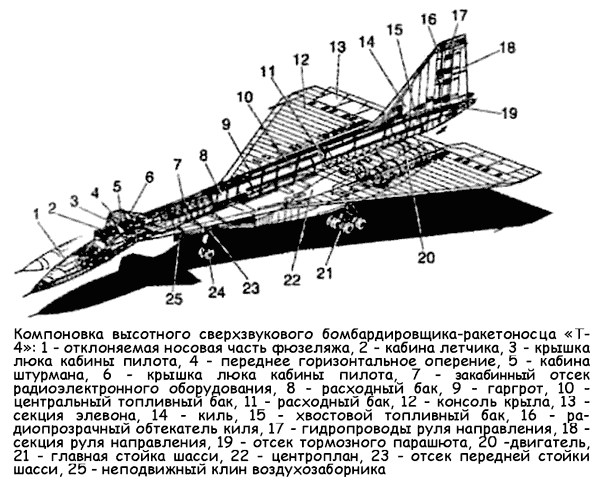
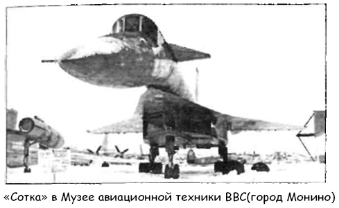
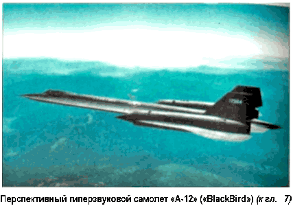
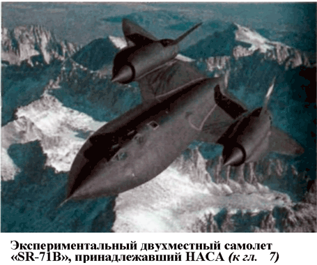
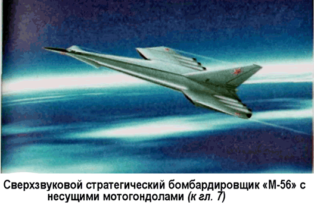
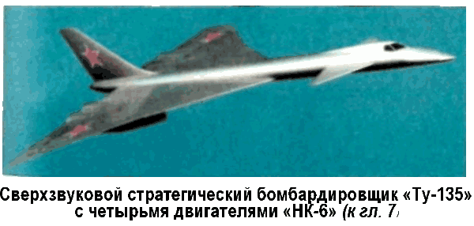

Сверхзвуковой высотный ракетоносец «Т-4» («Сотка»)
В декабре 1960 года, после выступления Никиты Хрущева на Сессии Верховного Совета о нецелесообразности развития авиации, вышло постановление ЦК КПСС и Совета Министров СССР, запрещающие все новые разработки в области авиации. Было разрешено заниматься только модифицированием существующих самолетов. Одновременно все авиационные конструкторские бюро получили задания по ракетной тематике. Этой затее активно противодействовал Андрей Николаевич Туполев, «пробивавший» свой проект стратегического бомбардировщика «Ту-135».
Пуск в серийное производство «Ту-135» также не устраивал председателя Государственной комиссии по авиационной технике Петра Дементьева. Для того чтобы избавиться от этого проекта, Дементьев предложил сформулировать задание, с которым, как ему казалось, не способно справиться ни одно из авиационных конструкторских бюро.
Осенью 1961 года, когда в США уже готовились к взлету прототипы стратегического бомбардировщика «ХВ-70» и самолета-разведчика «SR-71», Госкомитет, возглавляемый Дементьевым, выдал ОКБ-156 Андрея Туполева, ОКБ-51 Павла Сухого и ОКБ-115 Александра Яковлева техническое задание на разработку на конкурсных началах сверхзвукового бомбардировщика-ракетоносца.
Характеристики нового стратегического бомбардировщика были определены Научно-исследовательским институтом авиационных систем в Москве на основании анализа задач, для выполнения которых предназначался такой самолет.
Принципиальной особенностью стал акцент на уничтожение направленных против СССР нестратегических ударных средств, прежде всего — американских авианосцев. Атака на авианосец должна была выполняться без захода в зону его ПВО. На основе такого требования дальность бомбардировщика была определена в 4000 километров, а радиус действияв 2000 километров плюс 1500 километров дальности пуска ракет «воздух — корабль». Ввиду необходимости минимизировать время реакции от поступления команды до нанесения удара максимальная скорость самолета задавалась величиной в 3 Маха, а крейсерская — 2,8 Маха. Вместе с тем к самолету было предъявлено требование базироваться не только на бетонных, но и на грунтовых взлетно-посадочных полосах.
Работы трех авиастроительных ОКБ над этой темой тщательно изучались и в июле и сентябре 1962 года обсуждались на научно-техническом совете министерства авиационной промышленности.
Как и ожидалось, Туполев выдвинул на конкурс проект «Ту-135» (чуть позже — доработанный «Ту-125»), который теперь под «благовидным» предлогом был отвергнут.
Яковлев предложил проект самолета «Як-33» (взлетный вес — 90 тонн, крейсерская скорость полета — 3000 км/ч, высота — 25 километров, дальность — 6000 километров), представлявшего собой высокоплан из жаропрочной стали с треугольным крылом, классическим оперением, выступающей кабиной экипажа и четырьмя двигателями «РД-15», располагавшимися под крыльями.
Однако победителем конкурса неожиданно для всех стал проект Павла Сухого, проходивший под обозначением «Т-4».
Работы над «Т-4» начались в ОКБ-51 еще осенью 1961 года.
Первоначальная проработка облика самолета была поручена заместителю начальника бригады общих видов Александру Полякову, а руководство ею — Ивану Цебрикову. Одновременно разработкой самолета в инициативном порядке занялся и молодой инженер бригады — Олег Самойлович. Его «альтернативный» проект был одобрен Сухим, и в результате Самойлович был назначен руководителем этой разработки с присвоением квалификации ведущего конструктора. Компоновка нового самолета была выполнена по схеме «утка» с передним горизонтальным оперением и двигателями в изолированных мотогондолах, расположенных под консолями крыла.
Воздухозаборник выступал за переднюю кромку крыла. Первые теоретические расчеты показали, что машина будет весить около 102 тонн. Кстати, именно отсюда и произошло второе название самолета — «Изделие 100» («Сотка»).
В декабре 1961 года состоялся первый доклад «суховцев» в ЦАГИ на научно-техническом совете, председателем которого был Владимир Мясищев. Для совета были подготовлены инженерная записка и небольшая тактическая модель первой компоновки. Проект одобрили и работы по дальнейшему совершенствованию компоновки нового ударного самолета были продолжены.
Основное внимание на этом этапе было уделено поиску оптимальной аэродинамической компоновки машины, удовлетворяющей основной задаче самолета — способности выполнять длительный полет на большой высоте со скоростью в 3 Маха. В конце первого квартала 1962 года начались продувки моделей и элементов конструкции в ЦАГИ. Если выбор аэродинамической компоновки («утка» с передним горизонтальным оперением) был сделан сразу, то с расположением мотогондол двигателей и поиском отвечающего требованиям воздухозаборника, дела обстояли куда сложнее.
На основе компоновки с «пакетным» расположением двигателей в мае 1962 года был разработан проект «летающее крыло» с переменной стреловидностью и выступающим из крыла фюзеляжем. В конструкторском бюро ее называли «квази-интегральной».
Бюро Павла Сухого хорошо подготовилось к решающему заседанию научно-технического совета. Кроме готового макета, который демонстрировал сам Главный конструктор, на совете были представлены двигатели к «Т-4»: «Р-15БФ-300» Сергея Туманского (разрабатываемый в тот период для «МиГ-25») и «Р-36-41» Петра Колесова (этот двигатель и получил предпочтение). Ракетное КБ Александра Березняка предложило для «Т-4» крылатую ракету «Х-45».
По итогам конкурса было подготовлено обращение к ЦК КПСС и Совету Министров СССР с предложением начать разработку «сотки». К процессу подготовки документации и постройке самолета подключили КБ и завод Семена Лавочкина, где даже успели изготовить боковые отсеки фюзеляжа. Однако в декабре 1962 года завод перешел на ракетную тематику Владимира Челомея и взамен для строительства «Т-4» выделили Тушинский машиностроительный завод и МКБ «Буревестник» в качестве филиала ОКБ Сухого для участия в проектировании самолета.
Во время подготовки постановления к Павлу Сухому приехал глава ГКАТ Петр Дементьев. Олег Самойлович так вспоминает об этой встрече:
«Дементьев обратился к Сухому: «Павел Осипович вы свою задачу выполнили. Мавр сделал свое дело, мавр должен уйти. Эта тема принадлежит Туполеву. Он лишился возможности строить Ту-135. Поэтому я и вас прошу отказаться от своей разработки». Сухой промолчал, а потом вежливо ответил Дементьеву: «Вы меня извините, но конкурс выиграл я, а не Андрей Николаевич. Поэтому я не могу отказаться от этой темы, тем более я против того, чтобы мое КБ загружали ракетной тематикой. Я хочу строить самолеты». Дементьев внутренне вспыхнул, но виду не показал и лишь сказал Сухому. «Ну, Павел Осипович, смотрите как хотите», после чего встал, попрощался и уехал».
Через некоторое время состоялся телефонный разговор между Сухим и Туполевым, свидетелем которого опять же оказался Самойлович. Вот фрагмент этого разговора: «Туполев Сухому: «…Паш, ты умеешь делать хорошие истребители, но бомбардировщики ты делать не умеешь. Эта тема моя, откажись в мою пользу…» На что Павел Осипович ответил: «Андрей Николаевич, я прошу меня извинить, я ваш ученик, но я думаю, что именно потому, что я умею делать хорошие истребители, я сделаю хороший бомбардировщик и от этой темы не откажусь!»».
Несмотря на эти инциденты, осенью 1962 года конструкторы ОКБ-51 приступили к разработке аванпроекта самолета «Т-4».
Процесс проектирования и производства занял почти девять лет. Это может показаться недопустимо большим сроком, если не знать, что практически все технологии, примененные при разработке ракетоносца «Т-4», создавались и внедрялись с нуля. Для «Сотки» были созданы специальные жаропрочные сплавы, неметаллические материалы, особая резина, пластики. В процессе разработки самолета конструкторы КБ получили 600 (!) авторских свидетельств на изобретения.
Предполагаемое использование широкого диапазона скоростей требовало тщательной отработки аэродинамической схемы. Поэтому в аэродинамических трубах ЦАГИ исследовали более 20 различных компоновок самолета и множество вариантов отдельных элементов — крыла, фюзеляжа, мотогондол и их взаимного расположения и сочетания. Результаты испытаний были проверены в полетах летающей лаборатории «100Л-1» на базе «Су-9». В период с 1967 по 1969 год на нем было испытано восемь конфигураций крыла. Для отработки электродистанционной аналоговой системы управления (ЭДСУ) была использована другая летающая лаборатория — «100ЛДУ», созданная на базе учебно-боевого «Су-7У».
Самолет «Т-4» оснастили несколькими комплексами радиоэлектронного оборудования: навигационным — на базе астроинерциальной системы с индикацией на планшете и многофункциональными пультами управления; прицельным — на базе радиолокатора переднего обзора с большой дальностью обнаружения; разведки, включавшем оптические, инфракрасные, радиотехнические датчики и впервые применявшуюся РАС бокового обзора Комплексирование и автоматизация управления бортовым оборудованием были столь высоки, что позволили ограничить экипаж самолета летчиком и штурманом-оператором.
В декабре 1965 года был утвержден окончательный, 33-й по счету, вариант самолета, и тогда же появилось постановление правительства по постройке машины. На этого отводился пятилетний срок.
В конечном виде ракетоносец «Т-4» выглядел следующим образом.
Габариты: длина самолета — 44,5 метра, высота самолета — 11,2 метра, размах крыла — 22,7 метра, площадь крыла — 295,7 м2, взлетная масса — 135 тонн, масса пустого самолета — 55,6 тонны.
«Сотка» была выполнена по схеме «бесхвостка» с треугольным крылом тонкого профиля с острой передней кромкой.
Использование для балансировки переднего оперения при малых запасах устойчивости уменьшило потери качества на балансировку, увеличило дальность полета на 7 % и снизило шарнирные моменты на органы управления. Малые запасы устойчивости создавались соответствующим изменением центровки за счет перекачки топлива в полете. Требуемые характеристики устойчивости и управляемости обеспечивались системой электродистанционного управления.
В продольном и боковом каналах управление осуществлялось элевонами.
На самолете установили турбореактивные двигатели «Р-36-41» конструкции Рыбинского моторостроительного КБ Петра Колесова. Все четыре двигателя разместили в общей мотогондоле с одним каналом на каждую пару. Питание их воздухом осуществлялось воздухозаборником смешанного сжатия с программно-замкнутой системой регулирования по числу Маха и по отношению давления в горле воздухозаборника и с системой слива пограничного слоя.
На принципиально новых насосных гидротурбинных агрегатах была выполнена и топливная система. Для обеспечения взрывозащиты баков от нагрева впервые была применена система нейтрального газа на жидком азоте, предусмотрены аварийный слив топлива и высокотемпературные подвижные соединения трубопроводов сильфонного типа. Для «Т-4» был выработан новый сорт термостабильного топлива РГ-1 (нафтил). Управление двигателями осуществлялось автоматической электродистанционной системой. Для отработки силовой установки создали модель с двигателями «ВД-19» и макет силовой установки с двигателями «79Р», с помощью которых был проведен комплекс исследований на различных стендах в ЦИАМ.
Из-за больших скоростей и нагрева конструкции самолета до 300 °C от фонаря решили практически отказаться. От него остался лишь круглый люк вверху, на крышке которого на первой машине был установлен перископ, которым летчик пользовался при взлете и посадке. В прочих же режимах полет проходил вслепую: по приборам. Но это не вызывало трудностей, поскольку машина была проста в пилотировании и управлении, обладала хорошей устойчивостью.


Крупным шагом вперед стало применение 4-кратной резервированной автоматической системы управления самолетом.
Спроектировали и новую испарительную систему кондиционирования воздуха замкнутого типа с применением топлива в качестве первичного хладагента для создания необходимых температурных условий в гермокабине и отсеках оборудования.
В конструкции посадочных устройств также применялось много нетрадиционных и новых решений: поворот и запрокидывание тележки основных опор одним цилиндром, двухкамерные амортизаторы с противоперегрузочным клапаном, спаренные пневматики, электродистанционное управление поворотом передних колес и так далее.
Вооружение «Т-4» состояло из двух гиперзвуковых противокорабельных ракет «Х-45» с дальностью пуска в 1500 километров, размещаемых на двух подкрыльевых узлах подвески.
Свободнопадающие бомбы и топливо были расположены в сбрасываемом подфюзеляжном контейнере. Интегральная бортовая система «Т-4» позволяла иметь автономную информацию о целевой обстановке и поражать цели, не заходя в зону ПВО противника. Скорость полета «Т-4» была такова, что это заставило бы противника произвести огромные затраты на развитие средств и преобразование объектовых систем ПВО.
В 1967 году вышло постановление о постройке опытной партии самолета «Т-4» в семи экземплярах (шесть летных, один статический). Первый экспериментальный самолет «101» намечалось использовать для отработки бортовых систем, определения устойчивости и управляемости самолета на максимальных скоростях полета и для определения летнотехнических характеристик. Экспериментальный самолет «102» планировалось использовать для отработки навигационного комплекса, а экспериментальный самолет «103» — для отработки реальных пусков управляемых ракет. На экспериментальном самолете «104» должны были быть отработаны вопросы применения бомбового вооружения, пуска управляемых ракет, а также проведен ряд испытаний для оценки характеристик дальности полета самолета.

Экспериментальный самолет «105» планировалось использовать для отработки систем радиоэлектронного комплекса, а экспериментальный самолет «106» — для отработки всего ударно-разведывательного комплекса в целом. Для статических испытаний предназначался самолет «10 °C». 22 августа 1972 года летчик-испытатель и шеф-пилот ОКБ-51 Владимир Ильюшин (тот самый, которого отдельные западные историки называют «первым космонавтом») поднял «Т-4» в воздух. Полет продолжался 40 минут.
В девятом испытательном полете, состоявшемся 6 августа 1973 года, машина преодолела звуковой барьер, показав скорость в 1,28 Маха на высоте 12100 метров.
В дальнейшем предполагалось довести скорость самолета до 3000 км/ч (2,8 Маха) с максимальной взлетной массой 128 тонн и начать испытания «102» машины со штатным комплектом радиоэлектронного оборудования. Но к марту 1974 года все приостановилось. Общий налет экспериментального самолета «101» составил 10 часов 20 минут.
Казалось, что у «Т-4» безоблачное будущее. После того как Никита Хрущев ушел в отставку и Министерство занялось восстановлением разрушенной политиками авиационной промышленности, работу над «Соткой» называли «особо приоритетной». В заявке ВВС на пятилетку (1970–1975 годы) предусматривалось построить на Казанском авиазаводе 250 самолетов «Т-4». Однако вскоре ситуация резко изменилась.
Однажды летчика-испытателя Ильюшина спросили, почему была прекращена программа строительства и летных испытаний хотя бы опытных экземпляров «Т-4». Ильюшин ответил так: «Никто, нигде и никому не объяснил еще происшедшего с этой машиной. Второй экземпляр самолета был уже готов к полету, как и летавший успешно первый самолет.
Готовился третий. И вот, не говоря никому ни слова, разрезали автогеном второй и третий самолеты. Сколько ошибок было похоронено: и конструкторских, и моих, которые надо было выявить, вычеркнуть. Это преступление. Однажды на аэродроме законсервированную «сотку» увидел секретарь ЦК партии Рябов, курировавший тогда оборонные отрасли промышленности. Он спросил:»А почему ее прекратили?».
Ну, уж если секретарь ЦК спрашивает у нас, грешников, если уж он не знает, то тут можно только руками развести…»
На изменение отношения к «Т-4» во многом повлияло предложение Андрея Туполева о глубокой модернизации его самолета «Ту-22», строившегося на Казанском авиазаводе.
Патриарх спешил взять реванш и расквитаться за перенесенное «унижение». Туполев доказывал, что более простой и дешевый «Ту-22М» сможет решать аналогичные с «Т-4» задачи.
Туполев лично обещал министру обороны Гречко, что они внедрят «Ту-22М» в производство за два года.
По словам Андрея Николаевича, его новая машина была той самой синицей в руках, которая, естественно, лучше журавля в небе. В реальности же «Ту-22М» был запущен в серию только через семь лет и прошел множество модификаций, прежде чем стал полноценной боевой машиной. Но это уже было потом… А сейчас постановление о модернизации «Ту-22» стало началом конца «Сотки».
Тогда же ВВС выдали большой заказ на фронтовые истребители «МиГ-23». Их решено было делать на Тушинском машиностроительном заводе — последней производственной базе «Т-4». 27 января 1976 года вышел приказ Министерства авиационной промышленности № 38, которым закрывались работы по программе изделия «100». За полгода до этого экспериментальный самолет «101» был отправлен на вечную стоянку в Монинский музей ВВС, где и находится по сей день. Фрагменты самолета «102» экспонировались в ангаре Московского авиационного института, но впоследствии они были разрезаны на куски и увезены на переплавку. Такая же судьба постигла и частично собранный самолет «103».
В 1976 году ОКБ Сухого представило смету по расходам на самолет «Т-4», которые составили 1 миллиард 300 миллионов рублей! Но эти огромные деньги не пропали даром.
Применение титаново-стальных конструкций обеспечивало дальнейшее развитие отечественной сверхзвуковой авиации и космонавтики. Многие технические идеи, воплощенные в «Т-4», были использованы в конструкциях летательных аппаратов последующих поколений — «Су-24», «Су-27» и в других.



